FLO-2D Setup
Contents
FLO-2D Setup#
Welcome to the FLO-2D self-help setup page. The purpose of the self-help kit is to set up a computer with:
FLO-2D Software package
QGIS stand alone installer
Plugins FLO-2D, QuickMapServices, ProfileTool, CurveNumberGenerator
Training Data
The training tutorials will teach project development using QGIS. Advanced Modules are used to teach more specific and detailed projects. Watch this short video to learn how to set-up the computer.
Step 1: Get the Data#
Use this Download Link to access all installers, training data, and videos.
https://flo-2d.sharefile.com/d-s4888578b704c46138c9dd5e39f4b8668
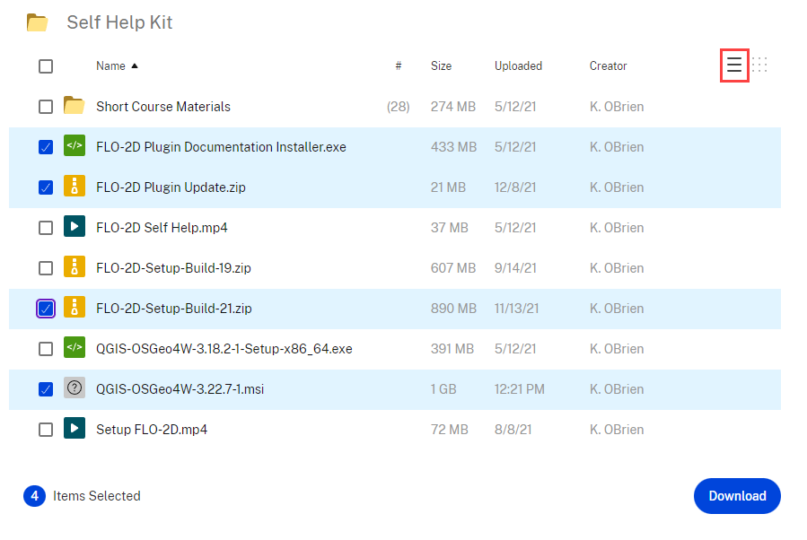
Select all.
Download.
The files are zipped into “file.zip” Extract them into a safe location.
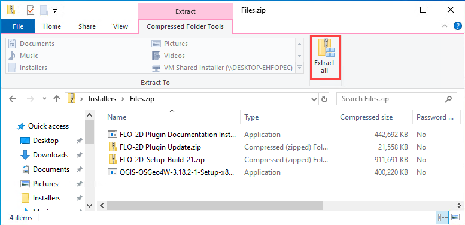
Step 2: FLO-2D Installer#
Install FLO-2D using the following instructions. Admin Rights Required.
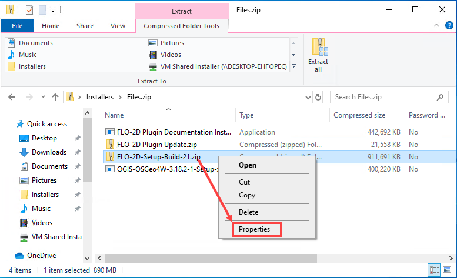
Right click zipped file to access properties.
Unblock the file if necessary.
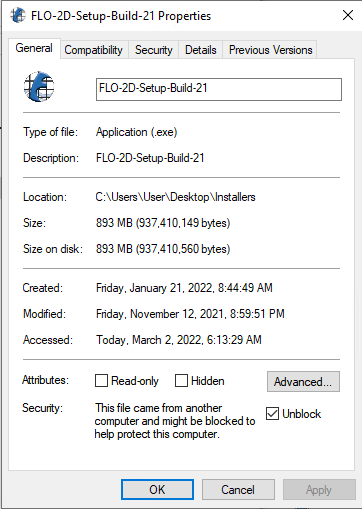
Extract the file and run the installer.
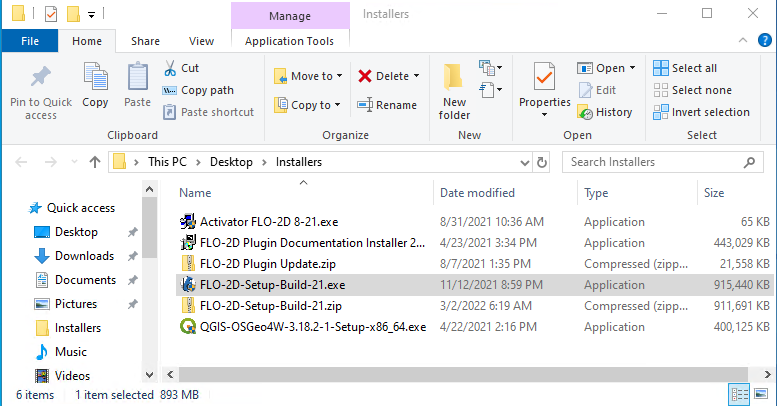
Choose NO for silent, and finish installing with the default settings.
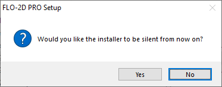
If running a new install, check all options. If running an update, uncheck Map Objects and EPA SWMM.
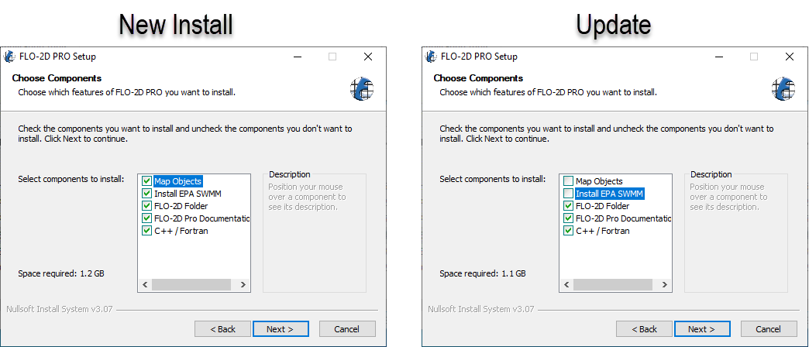
Click next and Install to run the installer.
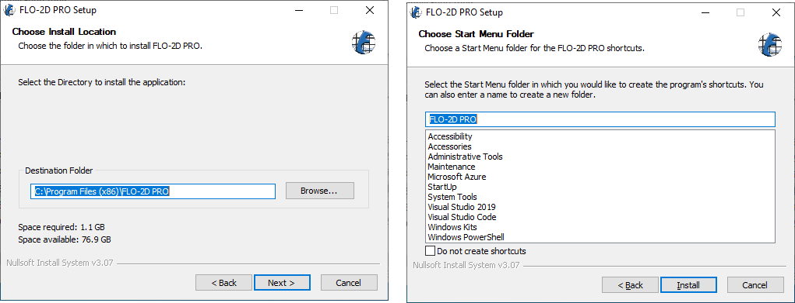
If an error appears related to the DAO35.EXE, run the installer again but uncheck Map Objects.
The last embedded installation package may trigger a restart.
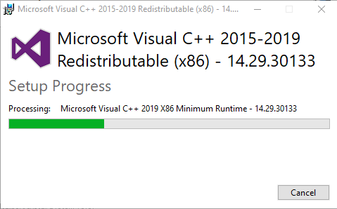
Step 3: Documentation Installer#
Use these instructions to install the FLO-2D Plugin documentation. Admin Rights Not Required.
Run the installer. FLO-2D Plugin Documentation Installer.exe
Default settings are fine, click Close to finish.
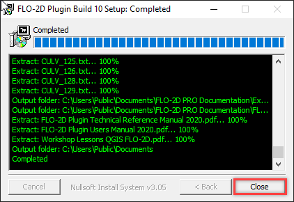
Step 4: QGIS Installer#
Follow these instructions to set up QGIS.
Double click the QGIS-OSGeo4W-3.22.7-1.msi file.
Finish installing with the default settings.
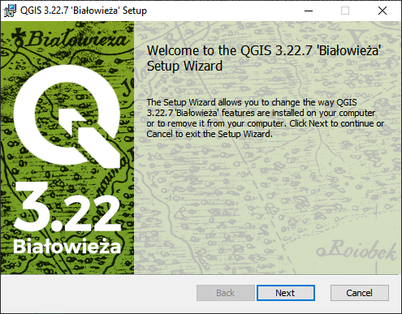
Open QGIS.

Click Settings/Options

Click the CRS tab and set the options as shown below. Use CRS from first layer added. Use Project CRS. Click OK to close the window.

Step 5: FLO-2D Plugin#
With QGIS installed it is time to add the FLO-2D plugin and a few other handy plugins.
Navigate to the plugin manager.

Install Quick Map Services and Profile Tool.
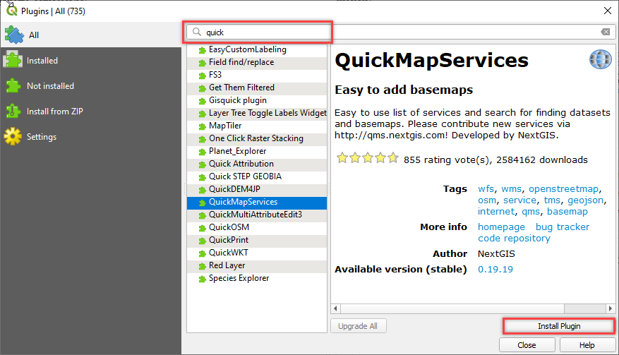
Lastly install from Zip FLO-2D Pro. Close the Plugin Manager once everything is finished installing.

Add more services to Quick Map Services and eliminate unwanted maps. Click Quick Map Services icon and click Settings. On the settings window, go to More Services and click Get Contributed pack. On the Visibility window, uncheck the unwanted maps.

This concludes the installation and setup. The tutorial data is here: C:\Users\Public\Documents\FLO-2D PRO Documentation\Example Projects\QGIS Tutorials
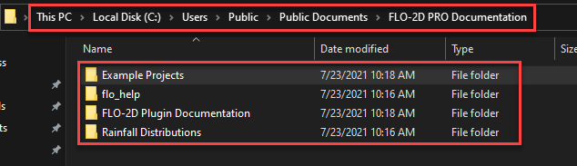
Go to Lesson 1 Part 1 on on the left sidebar to start.
Happy Modeling!